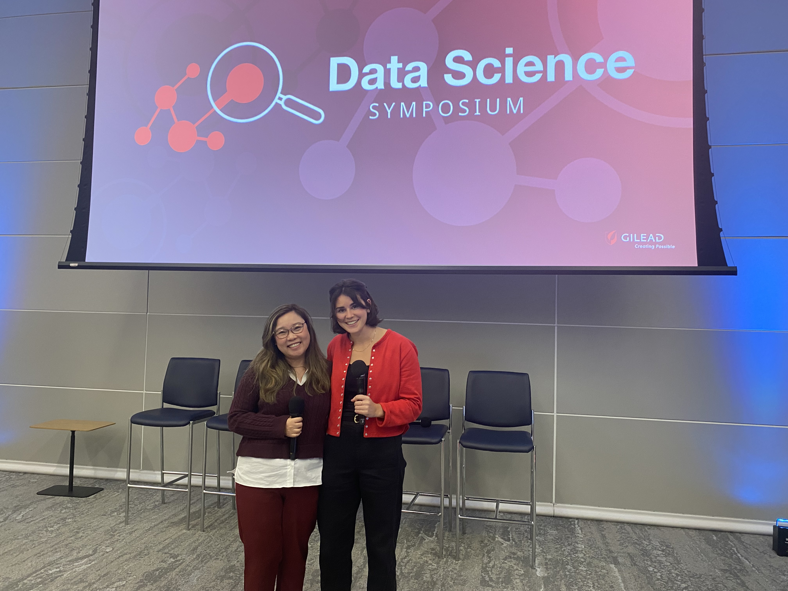
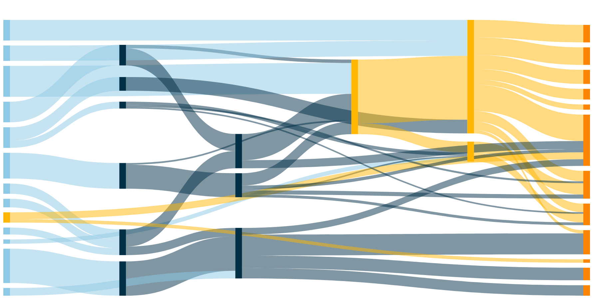
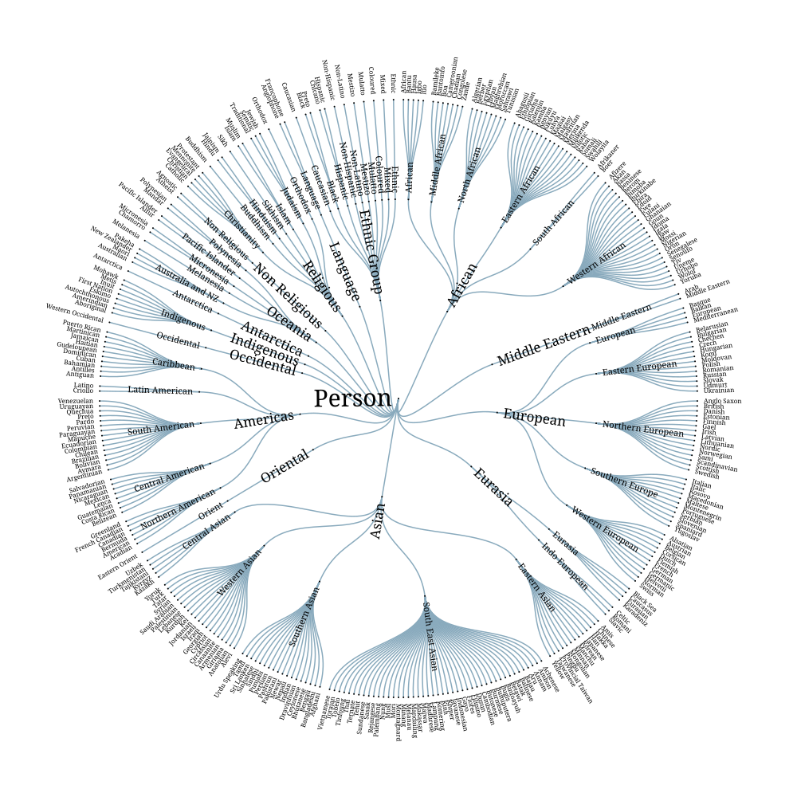
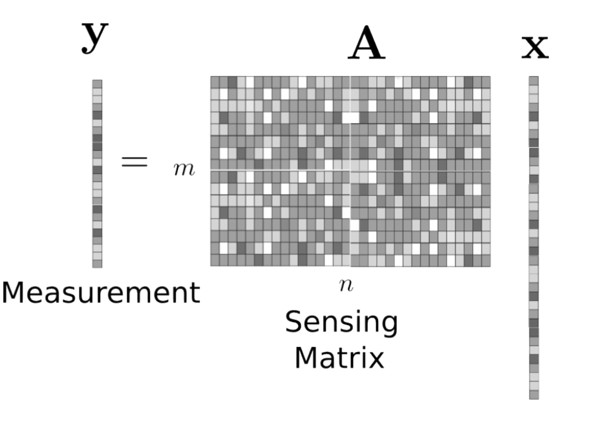

Le Wagon Workshop
A workshop project developed during Le Wagon bootcamp. This project demonstrates practical application of web development and data science skills learned during the program.

Data Science Symposium - RAG Chatbot
Building a Retrieval-Augmented Generation (RAG) chatbot for the Data Science Symposium. The project focuses on implementing advanced natural language processing techniques to create an intelligent conversational AI system.

Sankey Diagram Best Practices
A comprehensive guide and implementation of best practices for creating effective Sankey diagrams. This project explores data visualization techniques for flow diagrams and network representations.

Symposium Presentation on Survey Methods
A comprehensive presentation on modern survey methodology and statistical analysis techniques. This work covers survey design, sampling methods, and data analysis approaches for academic research.

Sparsity and Compressed Sensing
Research and implementation of compressed sensing algorithms and sparse signal recovery techniques. This project explores mathematical foundations and practical applications of sparse representations in signal processing.